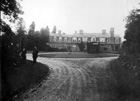
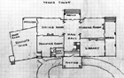
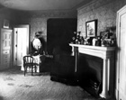
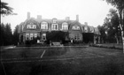
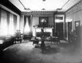
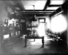
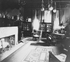
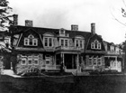

Home • Before Clergue • The Arrival • The Personality • Block House • Montfermier • Industrialization Process
Discovery Week • Collapse of the Empire • Rebirth • Clergue Letters
Montfermier
After living in the Block House for approximately 6 years, Francis H. Clergue began construction of his home on Moffley Hill. Although it is not known whether the plans for the house were prepared by an architect, Clergue’s brother, Bertrand, did submit a set of amended plans to the Engineering Department at the Lake Superior Power Co. for review and completion. The builder was Robert Lang of Sault Ste. Marie. According to an article that appeared in the Sault Star on April 17, 1902, the preparatory work for Clergue’s house had begun by that date.
Clergue chose to build his house on the brow Moffley Hill, a location outside the town limits of both Steelton and Sault Ste. Marie but which overlooked both communities. Excavation began in the spring of 1902 and by September the masons had completed the work on the first storey. The house was built of red sandstone, which had been excavated from the canal area. The studding for the second floor, which was to be of "fancy wooden construction", was in place by the time the first floor was completed. It was estimated at the time that construction would cost in the vicinity of $30,000. According to rumour, Clergue intended to expand his home the following year by building an additional structure approximately 100 feet from the main house. It was slated to accommodate a billiard room, an assembly hall and an observatory. (NOTE: this is probably an error – he probably intended to build a conservatory). As the construction was taking place, approximately 20 acres surrounding the house were cleared for lawns, gardens, a tennis court and outbuildings including a livery stable. Clergue named this house "Montfermier" after his father’s ancestral home near Montauban in Gascony, France. The name consists of the French words "mont" meaning hill or mountain and "fermier" meaning tenant. Literally, the name means "hill dweller".
Clergue moved into the house at Christmas of 1902. His parents, his sisters, Gertrude and Helen, and his brother, Bertrand, joined him in the house.
|  |  |  |
Access was gained to the property by means of a long, winding driveway that ended under a portico made of red sandstone, like the house. The main entrance to the house was located in the portico area. The door in this area was made of oak and was 2 inches thick. It opened into a main entrance and a hallway that bisected the first storey of the house. The hallway ended at a spacious enclosed porch that overlooked not only Sault Ste. Marie and Steelton but also the St. Mary’s River, the various allied industries that Clergue had developed and terraced lawns and gardens.
A magnificent circular staircase made of mahogany that led to the second floor dominated the first storey. Beyond the staircase was a library with built-in bookcases on three of the four walls.
A drawing room of similar size and shape was situated next to the library. On the other side of the hall was a dining room that overlooked the brow of the hill and could seat 60. Adjoining the dining room at the front of the house was a morning room, referred to as the Blue Room. This room was reputedly decorated in shades of blue with a polished cherry floor. When the Clergues entertained, the doors between the dining room and the morning room could be opened creating one gigantic room across one side of the house. Each of the rooms was finely furnished. Each was fitted with wall-to-wall carpeting with the exception of the morning room. The drawing room was dominated by a white grand piano.
The bedrooms were located on the second floor. The master bedroom was situated over the library and the morning room. Four of the bedrooms faced the hill while the remaining two bedrooms were situated over the drawing room. All of the downstairs rooms as well as six of the seven bedrooms were equipped with fireplaces.
|  |  |  |  |  |
The basement contained wine cellars, a valet room, a billiards room, a laundry room and the shaft for the elevator that serviced the rest of the house. At the time the house was constructed, it was heated with hot water by furnaces also located in the basement.
Servants quarters were located on the east side of the building on a slight angle away from the hill. These included the kitchens, a butler’s pantry, the servants’ dining room and an office. The servants’ bedrooms were on the second floor but they were completely separate from the main house.
Although the house was equipped with electricity, Clergue also had gas pipes built into each wall bearing a light fixture so that he could convert to gas lighting once gas for domestic consumption became available as a byproduct of the Steel Plant.
By 1909, the last member of the Clergue family had left Sault Ste. Marie. A man by the name of Francis Grenfell, who was travelling across Canada as part of a Royal Tour in 1912, had an opportunity to view the house when the then-occupants of the house hosted a reception for the Royal ladies as well as the most socially prominent women of the community. Grenfell arranged to purchase the house from Clergue. He renamed the house Bainbridge and made plans to turn it into a private club. When the First World War erupted, Grenfell served overseas where he was killed in action. As a result, the purchase was aborted and ownership reverted to Clergue.
It is at this point that the question of ownership of Montfermier becomes somewhat confusing. When Francis Hector and Bertrand Joseph served as executors of their mother’s will in February of 1917, some five (5) years after her death, they listed as monies secured by mortgage a mortgage given by Frances Clarissa to someone by the name of Charles Ponsonby on 26 September 1911. The mortgage dealt with parts of blocks 1 and 2 as well as other part blocks in the Stewart Subdivision in Steelton. Frances Clarissa specifically dealt with the disposition of Montfermier in Paragraph 15 of her will:
In respect of the sale of my late residence Montfermier, together withany other lands, the property of my son Bertrand Joseph for One hundred Thousand Dollars ($100,000) I declare it has been agreed between the said Bertrand Joseph Clergue and me that the said sale price should be apportioned Fifty Thousand Dollars ($50,000) to him as the value of his land sold and Fifty Thousand Dollars ($50,000) to me as the value of my land and premises so sold; and there has been paid on said sale price and received by my son Bertrand Joseph Clergue Twenty-five Thousand Dollars ($25,000)and the balance thereof, Seventy-five Thousand Dollars ($75,000), is secured by first mortgage payable in three (3) installments; and it has been agreed between my son Bertrand Joseph Clergue and me that the first installment Twenty-five Thousand Dollars ($25,000) payable on such mortgage about one year hence together with the interest on the said sum of Twenty-five Thousand Dollars when paid shall be received by my son Bertrand Joseph Clergue as and for the balance of his share of the sale price upon the said sale made by us as aforesaid; thereafter all payments of principal and interest on or in connection with the said mortgage shall be my sole property as my one half share of the purchase money on said sale as aforesaid.
Obviously, the question of possession, ownership and sale of Montfermier following the departure of the Clergue family bears further in-depth investigation. Such research is, however, beyond the scope of this project.
At the time of the Royal Tour, Mr. and Mrs. H.E. Talbott occupied Montfermier. Mr. Talbott had supervised the construction of the Merchant Mill at the Steel Plant and then gone on to become the president of the Lake Superior Paper Company. Mr. and Mrs. Talbott had moved to Sault Ste. Marie from Dayton, Ohio and into the house as early as 1910, presumably soon after the Clergues had vacated the premises. Once the Talbotts moved out of the house, probably in 1914, it was again vacant for a long period of time.
By 1934, when the house was destroyed by fire, Mayor James Lyons was said to be part owner of the property. In view of the fact that he employed 55 men cutting wood on the property for Lyons Fuel and Hardware, it is likely that he had purchased some of the surrounding property from Clergue (by this time both Frances Clarissa and Bertrand Joseph were dead) rather than the house itself. Francis H. Clergue was listed as the registered owner of the premises, which was only partially covered by insurance. Interestingly enough, when the house was being built its estimated cost of construction was $30,000. By the time it was destroyed, however, records indicate that it cost between $75,000. and $100,000. to build. In the opinion of Fire Chief W. Phillips, Mayor Lyons and the building’s caretaker, the fire was intentionally set. When the caretaker left the house at approximately 6:45 p.m., there was only one furnace operating and it was very low; furthermore, the caretaker checked the building carefully and ensured that the doors and windows were secure. In the course of the post-fire check it was found that the solid oak door at the portico entrance had been beaten down. By the time the fire department arrived, nothing could be done to save the building. Even if the house had not been engulfed in flames, the nearest fire hydrant was at the corner of John Street and Kehoe Avenue, a distance of approximately half a mile. The water pressure from the hydrant would have been so minimal as to be insufficient to fight the fire.
It was estimated that some 10,000 people were attracted to the area by the flames from the fire that shot 50 feet in the air. Houses along John, Bush and Morin Streets were covered with ashes.
By the time the fire was out, all that remained of Montfermier were the sandstone walls and three of the six chimneys. Everything else had collapsed inward. Over the years the remaining walls and two of the chimneys collapsed, leaving just one chimney standing. It was eventually demolished as fears grew that children playing in the area would be injured given its precarious nature.
In 1987 when the City was doing some construction work, workers found the remnants of the foundation of Montfermier on what is now Langdon Crescent. They also found glazed tiles from the fireplaces and a brass bed knob. This is all that remained of the once magnificent Montfermier.